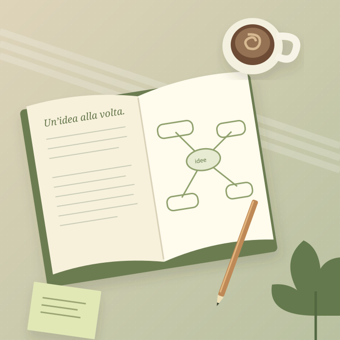

STUDIO E UNIVERSITÀ
Studenti
Meno ore sui libri, più cose che restano. Trova un metodo che funziona davvero per te.
Tecniche di memoriaMappe mentaliRipassi programmati
La memoria si allena. Il metodo si trova.
Scopri il tuo modo di imparare, con strumenti semplici e persone che ti accompagnano.

Obiettivi diversi, la stessa cura.
Scegli lo spazio più vicino a te.
Meno ore sui libri, più cose che restano. Trova un metodo che funziona davvero per te.
Il tuo modo di imparare merita gli strumenti giusti. Valorizziamo insieme i tuoi punti di forza.
Curiosità, memoria e nuove connessioni. Prenditi cura della tua mente, a ogni età.
Scopri quando ripassare e trasforma le informazioni in ricordi duraturi.
Richiama l'argomento senza guardare gli appunti. Verifica ciò che manca, poi ripeti dopo 1, 7, 30 e 90 giorni. Adatta gli intervalli alle tue difficoltà.
Il video didattico sarà disponibile dal backend. Puoi già provare il pianificatore qui accanto.
Associa ogni cifra a un suono, poi crea un ricordo personale.
Scegli chi ti accompagnerà nel prossimo passo.
La prenotazione utilizza una call inclusa nel Pacchetto Completo. Nella demo hai una call disponibile.
Ogni registrazione si sblocca una sola volta, con 3 crediti.
Scegli una lezione o fai un passo in più
con il supporto di un tutor.
Una lezione preregistrata a tua scelta.
Lezione preregistrata + call individuale di 1 ora.
Ricarica i crediti · prezzi dimostrativi, IVA inclusa
In modalità demo gli acquisti sono simulati e non viene addebitato denaro.
Il tuo percorso parte da chi sei. Noi ti aiutiamo a trovare la strada.